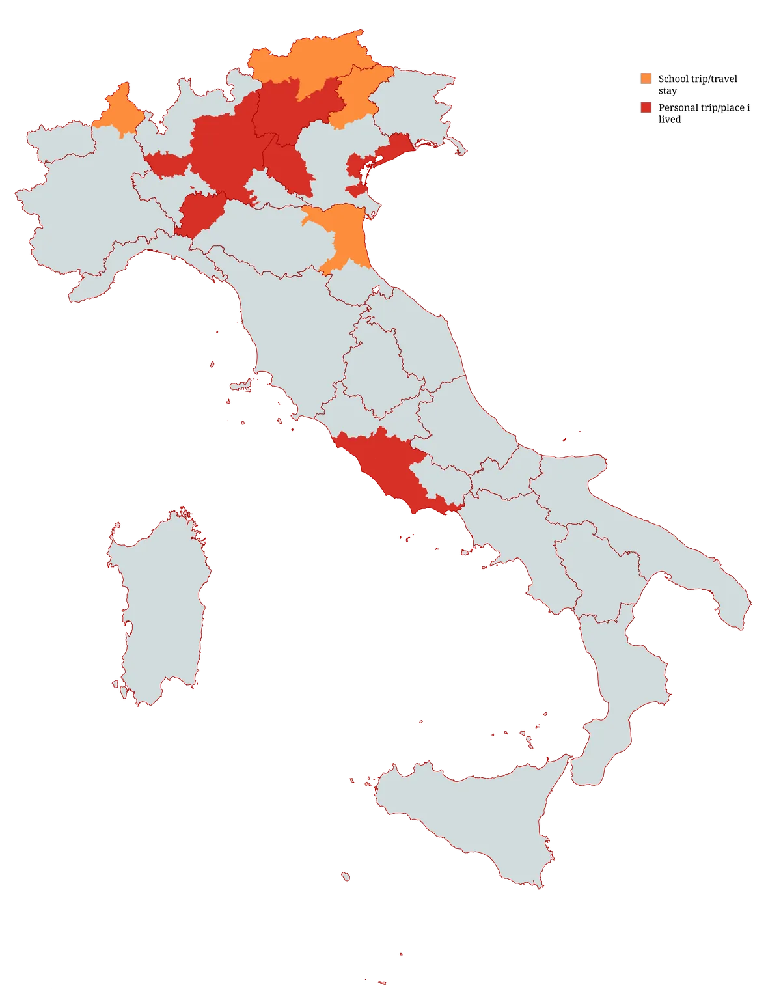
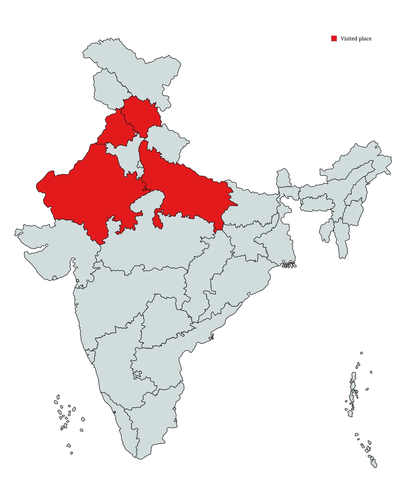

| Country | Year (1st visit) | Notes |
|---|

Italy is where i was born and raised, so writing about it feels strange; you don't really "visit" the place you call home. But i've moved around enough inside it to have real opinions. Some regions, as you can see, i visited with school trips like Borromeo islands (Piemonte), Comacchio (Emilia Romagna), Ravenna (Emilia Romagna). And some regions i visited by myself, in particular:

My family roots are here, so the trip in 2009. I used to stay mostly in Punjab, countryside. Visited Himachal Pradesh in 2022, in particular Kullu, Rewalsar and Manali. In 2024 i had a road trip from Agra to the Pink city Jaipur, in Rajasthan. First time i ridden a Dromedary; India taught me a lot of things, especially how to live a slower life and enjoy little moments, because most of things are temporary. It also taught me how to deal with merchant. I got lucky that i have an indian skin, if i had been a foreigner, i would have been scammed easily. Rajasthan specifically felt like another planet — the colour palette, the architecture, the temperature. Jaipur is the kind of places that make you feel that European cities are, by comparison, very young and very modest.
The food gap between "authentic Indian" and what gets sold as Indian food in European restaurants is enormous. Not just in quality in variety. What most Europeans call "Indian food" is basically one regional subset of one community's cooking.
↑ back to top{kind=link}
{kind=link}